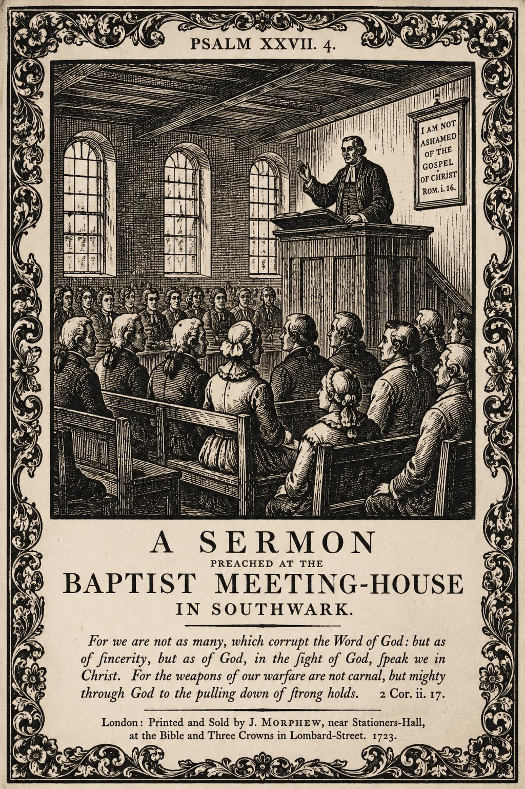

Биография Джона Гилла — не просто история пастора XVIII века. Это рассказ о беспрецедентной интеллектуальной дисциплине, богословской системе и ярлыках, которые история поспешила повесить на него после смерти. Мы разделили исследование на три самостоятельных текста.
Человек
От юности в Кетеринге до формирования характера. Детство, призвание, семья, Декларация 1729.
Учёный
Экзегеза, раввинистика, 9-томный комментарий, учение о Троице, Свод богословия 1769.
Наследие
Полемика с Уэсли, гиперкальвинизм, Спердген, влияние на Америку, смерть, реабилитация.

JOHN GILL, D.D.
I. Становление и призвание
Откуда рождаются гении без университетов
Джон Гилл родился 23 ноября 1697 года в Кетеринге, Нортгемптоншир — небольшом графстве в центре Англии, где господствовал не университетский звон, а тихий труд диссентёрских общин. Его отец, Эдвард Гилл, был торговцем шерстяными изделиями (woolen merchant) и дьяконом в баптистской церкви Кетеринга — человек умеренного достатка, которого современники хвалили за «благодать, благочестие и святой образ жизни» (Баптистская энциклопедия, 1881). Семья принадлежала к смешанной общине из пресвитериан, независимых и баптистов, пока Эдвард и Уильям Уоллис не основали отдельную Особую Баптистскую церковь. Мать, Элизабет Уокер, воспитывала детей в духе строгого пуританского кальвинизма, где «избрание» не было абстракцией, а воздухом, которым дышали.
Богословская атмосфера Кетеринга в конце XVII — начале XVIII века была пропитана идеями Джозефа Хасси (1659–1726) и Ричарда Дэвиса — богословов, которые формулировали доктрины суверенной благодати с особой строгостью, избегая стандартных «предложений благодати» невозрождённым. Гилл защищал Хасси и Тобиаса Криспа в одной фразе: «оба были людьми великого благочестия и учёности». Питер Тун в своей монографии «The Emergence of Hyper-Calvinism» (1967) считал Хасси «главным архитектором гиперкальвинизма» среди нонконформистов, а Гилла — его продолжателем в Лондоне. Это важный контекст: богословие, которое Гилл защищал всю жизнь, он получил не из книг — он вырос в нём.
Это важный факт для биографии: Гилл вырос не в англиканской умеренности, не в просветительской рациональности, а в среде Particular Baptists — тех, кто исповедовал личное избрание, особое искупление, действенную благодать. Когда позже Гилл будет защищать Троицу против унитаристов, писать The Cause of God and Truth против арминианства, создавать первое систематическое богословие баптистов — он будет защищать не заимствованные догмы, а собственную духовную почву.
Утро рождения: три пророчества

Ранним утром 23 ноября 1697 года, когда первенец явился на свет, к дому пришёл дровосек Чемберс с вязанкой хвороста. Отец Эдвард вышел к нему с нескрываемой радостью, объявив о рождении сына. В тот же миг, по словам дровосека, мимо прошёл незнакомец — которого тот никогда прежде не видел и больше не встречал — и добавил: «Да, и учёным будет, и всему миру этого не остановить». Этот дровосек, которого соседи знали как человека трезвомыслящего, честного и правдивого, неизменно и без каких-либо вариаций повторял этот рассказ — годами спустя, когда его спрашивали. Биография 1772 года, вышедшая всего через год после смерти Гилла, приводит её как достоверный рассказ от живых свидетелей.
Одно из самых странных и трогательных преданий в истории Гилла связано с самим утром его появления на свет — 23 ноября 1697 года. Риппон, биограф Гилла, записал этот рассказ как сведение, которое «постоянно и уверенно подтверждал» Чеймберс-дровосек «в разные времена, без малейших изменений, даже спустя много лет, когда его специально об этом спрашивали»:
Риппон добавляет, что Эдвард Гилл задолго до рождения сына имел «сильное убеждение», что ожидаемый ребёнок будет сыном и окажет «выдающуюся службу делу баптистов» — и даже что этот ребёнок станет служителем слова. Он сохранял это убеждение, «когда всё казалось неблагоприятным»: это был не фанатизм, не меланхолия, не энтузиазм, как настаивает биограф, — просто тихое, непреклонное ожидание человека, знавшего своего Бога.
«Пророчество незнакомца» входит в жанр providential narrative — историй о Божьем провидении, которые бережно хранились баптистскими общинами. Но важнее самого предания — то, что оно сбылось: человек без университета, которому «весь мир мог помешать», стал учёным, перед которым снимали шляпу оксфордские профессора.
Книжная лавка вместо грамматической школы
Иврит Гилл выучил самостоятельно — биография 1772 года зафиксировала это точной латинской пометкой: «Suo Marte» — то есть собственными силами, только с грамматикой и лексиконом Буксторфа. С ними одними он преодолел главные трудности этого языка и вскоре мог читать еврейскую Библию «с большой лёгкостью и удовольствием».
Мальчик посещал книжную лавку в городе так регулярно — ради консультации с разными авторами — что у жителей Кеттеринга вошло в обычай употреблять это как поговорку: «такое-то дело верно, как то, что Джон Гилл в книжной лавке». Та же поговорка жила с ним и дальше — лондонские знакомые говорили: «так же верно, как то, что доктор Гилл в своём кабинете».
Из «Баптистской энциклопедии» 1881 года: «Уже в сравнительно раннем возрасте он начал собирать еврейские труды — два Талмуда, Таргумы и всё, имеющее отношение к Ветхому Завету и его эпохе; и можно с уверенностью сказать, что ни один человек в XVIII веке не знал литературы и обычаев древних евреев так же хорошо, как Джон Гилл». Суждение энциклопедии — не богословской, а исторической — ставит Гилла на первое место среди христианских гебраистов всего столетия.
Гилл поступил в Кетерингскую грамматическую школу и быстро обогнал сверстников. К одиннадцати годам он уже читал классиков на латыни и греческом. В рыночные дни мальчик постоянно заходил в книжную лавку — в округе даже родилась поговорка: когда хотели сказать, что нечто несомненно истинно, говорили: «это так же верно, как то, что Джон Гилл в книжной лавке».
Но в 1708 году школа ввела обязательное утреннее посещение англиканских молитв. Эдвард Гилл, как диссентёр, не признававший верховенства монарха в церковных делах, забрал сына. Богатые семьи могли отправить детей в другие школы. У Гиллов такой возможности не было. Формальное образование Гилла закончилось в одиннадцать лет.
То, что для другого стало бы трагедией, для Гилла стало методом. Он остался с книжной лавкой, грамматикой Буксторфа по еврейскому языку, греческим Новым Заветом и неукротимым желанием учиться. К четырнадцати годам он свободно читал на латыни, греческом и начинал иврит. В девятнадцать буквально выучил еврейский по подержанной грамматике — без учителя, без собеседника, по одной только книге и собственной одержимости.
| Возраст | Достижение | Источник |
|---|---|---|
| 10 лет | Прочитал греческий Новый Завет целиком | Rippon, Memoir |
| 11 лет | Вынужден покинуть грамматическую школу | Церковные записи Кетеринга |
| ~14 лет | Владеет латынью, греческим, начинает иврит | Автобиографические заметки |
| 19 лет | Читает еврейскую Библию без помощи | Свидетельства учеников |
Бытие 3:9 — вопрос, изменивший жизнь
Около двенадцати лет Гилл услышал проповедь Уильяма Уоллиса на текст: «И призвал Господь Адам и сказал ему: где ты?» (Быт. 3:9). Этот вопрос — Божий зов к падшему человеку — пронзил мальчика. Где я? В каком состоянии нахожусь? Что justify, если умру необращённым?
Но в отличие от многих последователей «опыта» того времени, Гилл не рванулся к публичному исповеданию. Он ждал семь лет. Только 1 ноября 1716 года, в девятнадцать лет, он публично исповедал веру перед церковью Кетеринга и был крещён погружением в реке Томасом Уоллисом. Через несколько дней, 4 ноября, он был принят в полное общение церкви и впервые участвовал в Вечере Господней.
Вечером дня крещения, на молитвенном собрании в частном доме, Гилл прочитал Исаию 53 и истолковал некоторые места. Присутствующие увидели в этом признак служительского дара. Следующим воскресным вечером он произнёс первую проповедь — на 1 Коринфянам 2:2: «я рассудил быть у вас незнающим ничего, кроме Иисуса Христа, и притом распятого».
Но прежде стоит остановиться на том, что Гилл сделал в сам день крещения. Для обряда погружения в реке — 1 ноября 1716 года, в виду многих зрителей — Гилл сам написал гимн, который пели присутствующие. Это первый из известных нам поэтических текстов Гилла:
This ordinance he gave?
And did his sacred body lie
Within the liquid grave?
Did Jesus condescend so low
To leave us an example?
And sha'n't we by this pattern go;
This heavenly rule so ample?
What rich and what amazing grace!
What love beyond degree!
That we the heavenly road should trace,
And should baptized be.
That we should follow Christ the Lamb,
In owning his commands;
For what we do, he did the same,
Tho' done with purer hands.
Дарованное Им установление?
И праведное тело погрузить
В могилу водную для погребения?
Ужели снизошёл Иисус так низко,
Оставив нам пример для подражания?
Неужто не пойдём дорогой близкой
По небесам начертанным предписаниям?
О, как богата чудная благодать!
Любовь Его безмерна и сильна!
Чтоб путь небесный нам уразуметь,
Обряд крещения исполнить мы должны.
Чтоб следовать за Агнцем — за Христом,
Его святым заветам подчиниться;
Всё то, что делаем, Он сделал Сам,
Хоть чистыми руками Он крестился.
Этот гимн — богословие в миниатюре: воплощение Христа как образец, крещение как исповедание смерти и воскресения, послушание как ответ на благодать. За полвека пасторства Гилл не отступил от этого ядра ни на шаг.
II. Пасторское служение в Хорслидауне
Хорслидаун: пятьдесят один год на одном месте

Ещё до своей лондонской кафедры Гилл прошёл практику: в 1718 году, в возрасте двадцати одного года, он помогал пастору Джону Дэвису в баптистской церкви Хайем-Феррерс (Northamptonshire). Это был первый опыт пастырского служения — пробный год перед настоящим призванием. Уже тогда его проповедь обратила «значительное число людей», и у его друзей «питались великие надежды о будущей полезности» молодого Гилла (Баптистская энциклопедия, 1881).
После первых опытов служения Гилл переехал в Хайэм-Феррерс, где должен был помогать Джону Дэвису. Там он познакомился с Элизабет Негус, членом новой общины, и женился на ней в 1718 году. Риппон пишет о ней с восхищением: женщина благочестия, благоразумия, домашней мудрости, освободившая Гилла от бытовых забот для учёбы и служения. Они прожили вместе 46 лет, до её смерти в 1764 году.
В 1719 году церковь в Хорслидаун (Goat Yard Chapel), Саутварк, Лондон, потеряла пастора Бенджамина Стинтона — зятя и преемника знаменитого Бенджамина Кича. Услышав о молодом Гилле, община пригласила его проповедовать. 22 марта 1720 года, в двадцать два года, он был рукоположён.
Риппон сохранил запись рукоположения: Джон Скепп задавал вопросы церкви о призвании Гилла; Томас Кросби (будущий автор History of the Baptists) отвечал от имени общины; после молитв и возложения рук Гилл получил наставление не от людей, а от Писания — Деяния 20:28: «Внимайте себе и всему стаду, в котором Дух Святый поставил вас блюстителями, пасти Церковь Господа и Бога, которую Он приобрёл Себе Кровию Своею».
Гилл остался пастором Хорслидауна пятьдесят один год — до самой смерти в 1771-м. В 1757 году конгрегация нуждалась в более просторном помещении и переехала в часовню на Картер-Лейн, улица Сент-Олейвс, Саутварк. Та же церковь впоследствии стала Новой часовней Парк-Стрит, а затем — Metropolitan Tabernacle под руководством Чарльза Сперджена. Линия преемства: Бенджамин Кич → Бенджамин Стинтон → Джон Гилл → Джон Риппон → Чарльз Сперджен. Стинтон был зятем Бенджамина Кича. Сын Кича — Илия Кич — эмигрировал в Америку и основал старейшую из ныне существующих баптистских церквей в Пенсильвании, ставшую прародительницей всех баптистских церквей Филадельфии. Сегодня в Metropolitan Tabernacle продолжает служение пастор Питер Мастерс — с 1970 года, более пятидесяти пяти лет.
Во время служения Гилла церковь горячо поддерживала проповедь Джорджа Уайтфилда на открытом воздухе — на соседней Кеннингтон-Коммон (1739). Гилл и Уайтфилд расходились в вопросе о свободном призыве к покаянию, но в защите кальвинистского учения о благодати были союзниками. Тысячи людей слышали Уайтфилда у самых стен прихода Гилла.
Болезнь, семья и личная скорбь
В 1723 году — когда Гиллу было двадцать пять лет и он уже три года стоял за кафедрой в Хорслидауне — Бог посетил его тяжёлой болезнью. Риппон пишет: «Богу было угодно посетить его гектической лихорадкой и другими расстройствами тела, которые сильно изнурили и истощили его и угрожали его жизни». Только Божье вмешательство, по словам биографа, остановило болезнь: «его время ещё не пришло, и ему предстояло совершить для Бога ещё больше труда в Церкви и для дела веры». Этот кризис, однако, только закалил характер Гилла — и усилил его стремление к работе.
Рядом с ним была Элизабет Негус Гилл. Риппон сохранил слова самого Гилла о ней: «Доктор всегда был убеждён, что его брак с этой превосходной особой был главным делом, для которого Бог в своём провидении послал его в то место» — «одним из главных благословений своей жизни» (one of the capital blessings of his life). Это не сентиментальная оговорка: Гилл верил, что именно провидение Божье привело его в Хайем-Феррерс — и не для пастырской практики, а для встречи с женой.
Риппон описывает её как «нежную, благоразумную и заботливую» женщину, которая «своей неустанной мудростью взяла с его рук все домашние заботы, так что он мог с большим досугом и спокойствием духа продолжать свои занятия и посвящать себя своему служению». Без этой женщины — не было бы ни девятитомного комментария, ни двух томов систематики: за каждой из десяти тысяч рукописных страниц стоит и её труд. Они прожили вместе сорок шесть лет три месяца и девятнадцать дней — до её смерти 10 октября 1764 года, на 67-м году жизни.
После её смерти Гилл не смог говорить о ней с кафедры — «овдовевший муж не мог произнести о своей усопшей подруге ни слова с амвона». Но написал её подробную личную характеристику, которую «потом нашли среди его бумаг» — для себя, не для паствы — и Риппон опубликовал этот текст. Первую после смерти жены проповедь Гилл произнёс 21 октября 1764 года из Евр. 11:16 — «они стремились к лучшему, то есть к небесному» — и в конце добавил: «Сказанное может служить тому, чтобы отлучить нас от мира… ибо это — не наш покой, не наш дом, не наше родное место». У них было много детей, все из которых умерли в младенчестве, кроме трёх: Элизабет, Джона и Мэри.
| Ребёнок | Судьба | Примечание |
|---|---|---|
| Элизабет Гилл | Умерла 30 мая 1738, 12 лет | Риппон: «прелестное и желанное дитя по наружности, разуму и благодати» |
| Джон Гилл-младший | Ювелир, Грейсчёрч-стрит, Лондон; впоследствии оставил дело | Пережил отца |
| Мэри Гилл | Замужем за Джорджем Кейтом, книготорговцем той же улицы | Пережила отца |
Смерть тринадцатилетней Элизабет в 1738 году стала самым глубоким личным горем Гилла. На следующее воскресенье, 4 июня 1738 года, он сам проповедовал её похоронный серм он из 1 Фессалоникийцам 4:13–14: «Не хочу же оставить вас, братия, в неведении об умерших, дабы вы не скорбели, как прочие, не имеющие надежды. Ибо, если мы веруем, что Иисус умер и воскрес, то и умерших в Иисусе Бог приведёт с Ним».
Источник: SBJT 25.1 (2021), Michael Haykin; подтверждено Internet Archive (первое издание текста проповеди, 1738)
Опубликованная впоследствии проповедь включала «описание некоторых её избранных переживаний» — свидетельств духовной жизни девочки, записанных Гиллом. Это единственный случай в биографии Гилла, когда богослов и полемист растворяется в образе скорбящего отца, который говорит «скорее себе», чем общине. И именно это мгновение открывает то измерение Гилла, которое комментаторы и полемисты часто не замечают: за «доктором Многотомным» стоял человек, знавший, что такое стоять у могилы собственного ребёнка с надеждой на воскресение.
Систематическая евангелизация Саутварка
Существует устойчивое заблуждение, что Гилл был пастором, запертым в кабинете. Джордж Элла — автор монографии «Джон Гилл и причина Бога и истины» (1995) — восстанавливает более точную картину: братья в Хорслидауне изначально были привлечены к Гиллу именно его евангелизационными дарами. После того как Гилл восстановил церковь на библейском основании, он перешёл к систематической работе:
После начала движения Уайтфилда в 1739 году, когда тысячи собирались на Кеннингтон-Коммон, Уайтфилд приглашал Гилла разделить с ним кафедру. Конгрегация Гилла поддерживала открытые проповеди — и, по подсчётам Эллы, за долгие годы Гилл еженедельно достигал Евангелием более тысячи человек: в своей церкви, на лекциях в Истчипе и в других собраниях.
В том же году Гилл занялся другим спором о крещении — с Маттиасом Морисом, независимым пастором из Роуэла, написавшим памфлет против крещения погружением. Кетерингские баптисты попросили Гилла ответить, и он написал «Древний способ крещения погружением». Началась полемика, которая перешла Атлантику: баптисты Новой Англии, узнав об ответе Гилла, написали в Лондон с просьбой прислать экземпляры. Баптистский фонд отправил оставшийся тираж в Северную Америку — что и объясняет, почему эти памфлеты так редки в британских библиотеках.
По поводу этой полемики Гилл получил анонимное письмо из Тилберийского форта в Эссексе — горячее, исполненное восхищения. Оно завершалось стихами, которые вошли в антологию баптистского фольклора:
Cleanly compell'd him a swift retreat:
Next powerful GALE, by mighty blast made fall
The church's dragon, the gigantic WALL:
May you with like success be victor still,
And give your rude antagonist his fill,
To see that GALE is yet alive in GILL.
Источник: Риппон, «Краткие мемуары», 1771; Reformed Reader
Стих имеет в виду двух баптистских полемистов предыдущего поколения: Стеннетт (Джозеф Стеннетт, 1663–1713) и Гейл (Джон Гейл, 1680–1721), оба уже умершие. Автор письма говорит: «Гейл жив в Гилле» — то есть дух защитника истины продолжается в молодом полемисте. В семнадцатую строку вложено восхищение не юностью Гилла, а его способностью «принимать город», который он осаждает.
Декларация Козьего Двора 1729 года: архитектура исповедания

На протяжении первых десяти лет пасторства Гилл служил под Вторым Лондонским исповеданием 1689 года. К 1729 году члены общины сами обратились к нему с просьбой составить собственную декларацию — более сжатую, без груза исторических компромиссов. Один из поводов — история предшественника Бенджамина Стинтона: в 1704 году тот подписал документ в Лоримерс-Холле, фактически отказавшись от учения о вменённой праведности. Гилл видел в этом богословскую капитуляцию — и хотел предельной ясности.
Новая декларация состояла из десяти лаконичных статей, открывавшихся преамбулой в языке завета: «Будучи приведены в состояние благодати к тому, чтобы предать себя Господу и равно друг другу по воле Бога, мы считаем обязанностью, лежащей на нас, сделать объявление нашей веры и практики».
| Статья | Содержание |
|---|---|
| I | Писание — единственное правило веры и практики |
| II | Единый Бог в трёх равных Лицах: «Сын и Святой Дух столь же истинно и столь же собственно Бог, как и Отец» |
| III | Вечное избрание определённого числа ко спасению |
| IV | Первородный грех и полное нравственное падение |
| V | Воплощение Сына — с уточнением: человеческая душа Христа «была создана и образована в Его теле» при зачатии, а не предсуществовала |
| VI | Особое искупление — исключительно для избранных |
| VII | Оправдание только по вменённой праведности Христа, «без рассмотрения каких-либо дел праведности, совершённых ими самими» |
| VIII | Возрождение, обращение, освящение — исключительно «могущественной, действенной и непреодолимой благодатью Бога» |
| IX | Окончательное устояние всех избранных |
| X | Крещение верующих погружением и Вечеря Господня как установления Христа |
Статья V — полемика с теми, кто утверждал предсуществование человеческой души Христа, — показывает, что декларация писалась под конкретное богословское давление эпохи. Однако исповедание содержало не 10, а 12 статей. Статья XI уникальна: крещение объявляется «абсолютно необходимым условием» для участия в Вечере — закрытое причастие строго и последовательно. Статья XII о пении псалмов, гимнов и духовных песен: оно признаётся «установлением Евангелия», но «что касается времени, места и способа, каждый должен быть оставлен в своей свободе» — золотая середина между строгими псалмопевцами и теми, кто отвергал псалмы.
Заключительный абзац Исповедания уникален по тону: «Мы считаем себя обязанными сочувствовать друг другу во всех состояниях; также — терпеть слабости, падения и немощи друг друга, и в особенности — молиться друг за друга». Это не просто вероисповедальный документ — это пасторский устав общины. Риппон фиксирует: ещё в 1800 году новые члены принимались в общение лишь при условии полного согласия с Декларацией 1729 года. Исповедание, написанное рукой Гилла, служило живым уставом церкви почти сто лет после его смерти.
Именно эта декларация, а не Лондонское исповедание, определила богословский облик общины на следующие полтора века.
Проповедь отца на похоронах дочери: богословие скорби

30 мая 1738 года умерла Элизабет — тринадцатилетняя дочь Гилла, которую Риппон называет «прелестным и желанным дитём и по наружности, и по уму, и по благодати». Гилл произнёс погребальную проповедь сам — через пять дней после её смерти. Открыл её словами: «Позвольте мне сегодня проповедовать скорее самому себе и семье, нежели вам». Текст — 1 Фессалоникийцам 4:13–14. Проповедь напечатали с приложением «некоторых избранных переживаний» дочери — свидетельства того, что вера её была подлинной и сознательной уже в двенадцать-тринадцать лет.
Центральная богословская идея: союз со Христом смертью не разрывается. «Те, кто однажды во Христе, всегда таковы; те, кто в Нём при жизни, — в Нём и когда умирают; и будут найдены в Нём в утро воскресения и в день суда». О состоянии умерших верующих: «Они в присутствии и наслаждаются непрерывным общением с Богом — Отцом, Сыном и Духом». Гилл особо возражал против «сна души»: разлучившись с телом, душа становится «более деятельной в духовном служении», поскольку тело «часто является для неё помехой».
О скорби он сказал: «Наши друзья ушли лишь немного прежде нас; мы спешим за ними так быстро, как только могут нести нас крылья времени». Это его пасторский вопрос, которым он испытал собственное сердце: «Жили ли они во Христе?» — единственное основание утешения перед лицом смерти ближнего.
Когда умерла его жена Елизавета — 10 октября 1764 года, после сорока шести лет брака — Гилл снова взошёл на кафедру, 21 октября, с текстом Евр. 11:16. В конце проповеди он намеревался дать «краткое повествование о жизни» супруги. Но Риппон свидетельствует: «был настолько сражён, что в том месте, где это повествование должно было быть дано, не смог продолжать» — и прервал словами: «Но я воздержусь говорить что-либо ещё». Написанный характер жены он нашёл в себе силы выразить только на бумаге — рукопись была найдена в кабинете после его смерти.
Семья: дети, зять-издатель и богословие в деталях
У Гилла и Елизаветы было много детей, «все из которых умерли в младенчестве, кроме троих» (Риппон). Из выживших: дочь Элизабет погибла в тринадцать лет; сын Джон стал ювелиром на Грейсчёрч-стрит; дочь Мэри вышла замуж за книготорговца Джорджа Кита — на той же улице. Зять стал издателем многих трудов Гилла: на ряде титульных листов стоит «London: George Keith». Рукопись шла из пасторского кабинета через улицу к зятю-издателю. Когда здоровье Елизаветы ухудшилось, в стене между двумя соседними домами пробили проход на верхнем этаже, чтобы Мэри могла переходить и ухаживать за матерью. Семья буквально перестроила жильё под нужды больной женщины.
В начале брака Елизавета пережила выкидыш. Гилл посвятил ей много времени, что вызвало ропот в общине: некоторые прихожанки посчитали, что пастор «балует» жену. Он не изменил поведения — и в последние годы её болезни ухаживал столь интенсивно, что, по словам племянницы Джейн Смит, «вред был нанесён его собственному здоровью».
В «Своде богословия» Гилл писал о супружеском единстве языком, нетипичным для XVIII века:
О грубом обращении с женой Гилл писал решительно: «Не давай горьких слов, угрожающих речей, кислых взглядов, и тем более жестоких ударов — что жестоко, грубо, варварски и по-скотски, недостойно ни мужчины, ни христианина». В контексте XVIII века, когда закон допускал широкие права мужа, — это был нравственный манифест, а не риторика.
Последние слова Елизаветы, произнесённые за несколько воскресений до смерти — перед тем, как Гилл уходил служить проповедь, — он сохранил как итоговое богословское исповедание. Она процитировала Кол. 1:20: «сотворив мир чрез Него, Кровию Его Креста», — и «с величайшей силой» добавила: «И ДЛЯ МЕНЯ ТОЖЕ». Повторила. Последние различимые слова перед смертью: «Господи, Господи!» — «и тотчас, без вздоха и стона, она заснула на руках Иисуса».
Параллель очевидна: последние слова самого Гилла через семь лет — «О, Отец мой! Отец мой!». Муж и жена умерли с именем Бога на устах. Из рукописи, найденной в кабинете после смерти Гилла — слова о жене: «Завет непоколебим» (the covenant is sure).
Рукоположение 22 марта 1720 года: полный протокол события
Гиллу было двадцать два года. Церковь, рукополагавшая его, существовала с 1652 года — почти семьдесят лет до его прихода. Полная документированная последовательность, восстановленная из первоисточников:
После смерти Скеппа Гилл получил через Фонд партикулярных баптистов грант на покупку его обширной раввинистической библиотеки. Эти книги легли в основу девятитомного комментария. В предисловии к переизданию труда Скеппа «Божественная сила» (1751) Гилл назвал его «человеком исключительных талантов, горячим и живым проповедником Евангелия». Его близкий богословский союзник Джон Брайн (1703–1765) был обращён через служение самого Гилла — то, о чём обычно забывают, когда клеймят обоих «гиперкальвинистами».
В 1752 году, когда партикулярные баптисты предприняли первую попытку создать образовательное общество для пасторов, Гилл был процитирован как сетующий: «Баптисты к несчастью невежественны в важности учёности» (were unhappily ignorant of the importance of learning). Это парадокс: величайший учёный деноминации оплакивает академическую слабость её пасторства. Факт также опровергает образ Гилла как противника образования — он был его поборником, просто образование было ему недоступно. В 1760 году молодой Джон Мартин — будущий пастор Графтон-стрит, Вестминстер — перебрался в Лондон именно затем, чтобы слушать проповеди Гилла. Впоследствии Мартин стал одним из главных защитников традиции Гилла против Фуллера. Сам факт, что в 1760-е годы молодые пасторы специально приезжали в Саутварк ради одного проповедника, — показатель притягательной силы Гилла.
Три личных высказывания: человек за богословом
Колтон Строзер собрал три высказывания Гилла, каждое из которых обнажает разный пласт его личности — за систематиком и полемистом.
Исторический контекст: Саутуорк, джиновая лихорадка, правовое бесправие
Гилл родился в Кеттеринге — торговом городке на шерсти-вурстед. Его отец Эдвард, торговец шерстью и дьякон, был типичным представителем диссентерского среднего класса. В XVIII веке Кеттеринг пережил два крупных пожара — в 1744 и 1766 годах, оба при жизни Гилла. В 1792 году, через двадцать один год после его смерти, именно в Кеттеринге основали Баптистское миссионерское общество — Гилл и Кэри вышли из одной почвы, но разными путями.
Хорслидаун, Саутуорк — место его пасторства — стоял посреди промышленного южного Лондона: дубильни, причальные склады, кожевенное производство. Его паства не была ни аристократической, ни академической. С открытием Вестминстерского моста (1750) и Блэкфрайарского (1769) Саутуорк начал расти — что прямо объясняет переезд общины на Картер-Лейн в 1757 году.
Весь первый период пасторства (1720–1757) пришёлся на пик джиновой лихорадки: в 1723 году лондонец в среднем выпивал пинту джина в неделю. По некоторым оценкам, в 1740-х годах каждый восьмой лондонский дом продавал джин. Парламент принял пять ограничительных актов — в 1729, 1736, 1743, 1747 и 1751 годах. Гилл проповедовал в Саутуорке, где всё это происходило буквально за дверями молитвенного дома.
Кеннингтон-Коммон, в прямой видимости от церкви Гилла, — место публичных казней (не менее 141 человека до конца XVIII века), крикетных матчей и открытых проповедей. 29 апреля 1739 года Уайтфилд записал: «Проповедовал на Кеннингтон-Коммон... присутствовало не менее 30 000 человек». Тридцать тысяч человек в открытом поле — в двух милях от дома Гилла.
Весь срок пасторства Гилла прошёл в условиях юридического поражения в правах. Акты об испытании (1673) и Корпоративный акт (1661), лишавшие диссентеров государственных должностей, не были отменены до 1828 года. Оксфорд и Кембридж были закрыты не по бедности, а по вероисповеданию. Именно поэтому Маришальский колледж Абердина — шотландский университет — мог присвоить ему степень, недоступную в Англии. Быть похороненным в Банхилл-Филдс среди Беньяна, Уоттса и Блейка означало занять место в пантеоне английского инакомыслия — без диплома, без бенефиция, без права голоса в парламенте.
Исповедание Элизаветы и параллель в смерти
Рукопись, найденная в кабинете Гилла после смерти, сохранила последние ясные слова Элизаветы, произнесённые за несколько воскресений до кончины. Гилл уходил служить проповедь и прощался с женой. Та произнесла слова из Кол. 1:20: «сотворив мир чрез Него, Кровию Его Креста» — и затем «с величайшей силой и стремительностью» добавила: «И ДЛЯ МЕНЯ ТОЖЕ» — и повторила. Последние различимые слова перед смертью: «Господи, Господи!» — «и тотчас, без вздоха и стона, она заснула на руках Иисуса». Её последние слова из рукописи: «Завет непоколебим» (the covenant is sure).
Параллель очевидна: последние слова самого Гилла через семь лет — «О, Отец мой! Отец мой!». Муж и жена умерли с именем Бога на устах. Это не риторическая фигура — это документально зафиксированное совпадение двух смертей.
Джон Скепп: рукоположение и библиотека
Джон Скепп (ум. 1721) участвовал в рукоположении Гилла 22 марта 1720 года в двух ролях: задавал официальные вопросы церкви, а затем проповедовал наставление церкви из Евр. 13:17 — «Повинуйтесь наставникам вашим». Это значит, что человек, интеллектуально воспламенивший Гилла к раввинистической учёности, был и тем, кто официально поставил его в пастора — соединяя в одном дне два узловых момента жизни.
В предисловии к переизданию «Божественной силы» Скеппа (1751) Гилл писал о нём: «Г-н Джон Скепп был человеком исключительных талантов и способностей; очень быстрого, сильного, природного ума; великого усердия и трудолюбия в приобретении полезных знаний; горячим и живым проповедником Евангелия; ревностным защитником особых и отличительных доктрин его». Гилл также структурировал книгу Скеппа: разделил на главы, снабдил оглавлением — «для более лёгкого чтения и лучшего понимания». После смерти Скеппа Гилл получил через Фонд партикулярных баптистов грант на покупку его раввинистической библиотеки. Эти книги легли в основу девятитомного комментария.
На рукоположении 1720 года был и Томас Кросби — дьякон, отвечавший на официальные вопросы от лица церкви, и впоследствии автор первой «Истории английских баптистов» в Англии. Иными словами, на рукоположении Гилла присутствовал будущий историк, который это событие сам и описал.
Источники и литература к Части I
Для этой части использованы прежде всего близкие к Гиллу свидетельства и архивно-исторические исследования раннего лондонского периода. Популярные пересказы и энциклопедические страницы сверялись, но не принимались как основание без первичного или академического подтверждения.
Первичные и ранние источники
- A Brief Memoir of the Life and Writings of the Late Reverend John Gill, D.D. London, 1838; восходит к мемуарному материалу ближайшего преемника Гилла.
- The History of the English Baptists. London, 1738–1740 — сведения о рукоположении и ранней истории церкви.
- A Declaration of the Faith and Practice of the Church of Christ at Horsely-down. 1729 — «Goat Yard Declaration».
- An Account of some Choice Experiences of Elizabeth Gill. London, 1738 — свидетельства о дочери Гилла, изданные после её смерти.
Академические исследования
- “John Gill in London, 1719–1729: A Biographical Fragment.” Baptist Quarterly 22.2 (1967): 72–91.
- “‘Conjugal Union’: John Gill on Christian Marriage.” Southern Baptist Journal of Theology 25.1 (2021): 93–106.
- “Remembering Baptist Heroes: The Example of John Gill.” Southern Baptist Journal of Theology 25.1 (2021): 9–28.